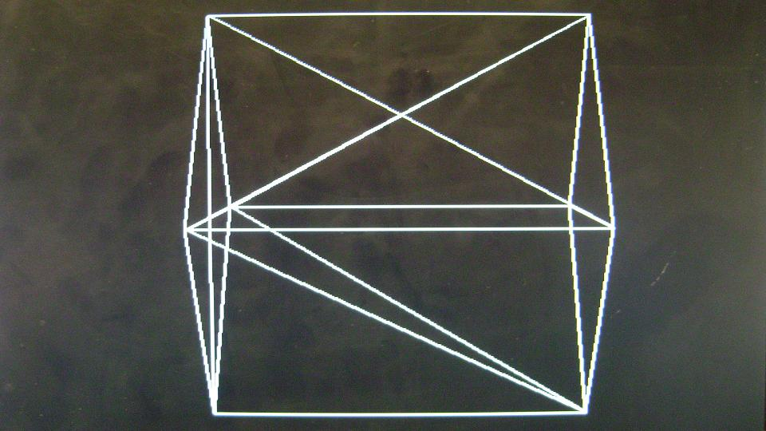

{kind=link}

3D WireMesh Generator
ECE576 Final Project, November 30th 2007
(Advisor: Prof. Bruce Land)
Introduction | High Level Design | Hardware Design | Results | Appendix | Pictures
Introduction
The project was an attempt to create a hardware transformation unit and a 3D rasterization system on the Cyclone II FPGA. The description of the 3D object to be modelled as a wire frame was provided to the system in form of a vertex list and face list which were stored in the M4K memory blocks using MIF (Memory Initialization Files). The world coordinates from the vertex list were transformed into screen coordinates and were drawn as wire frame by extracing the polygon information from the face list, on the VGA in real time. The user could control the camera position and orientation with a 3-degree freedom of movement and navigate through the scene with the user interface provided on the DE2 board.
This project report documents all the work done during the course of the project. It starts with providing background knowledge on transformation and then moves on to High Level Design. Then we discuss the approaches followed and the various problems faced during implementation. The report concludes with observations and results.
The motivation behind developing 3D wire mesh generator is professor Bruce Land's lecture on Computer Graphics that he took as a part of the course, ECE576 (Advanced Microcontroller Design) at Cornell University.
Figure. 1
Introduction | High Level Design | Hardware Design | Results | Appendix | Pictures
High Level Design
How does a flat two dimensional computer monitor show three dimensional looking views? How do game programmers convince you that you're seeing a real landscape? The answer to these questions is fast 3D rendering.
A picture that has or appears to have height, width and depth is three-dimensional (or 3-D).A picture that has height and width but no depth is two-dimensional (or 2-D). This mapping of 3-D points to 2-D points which can be displayed on a raster display is called transformation and depends on the viewing parameters.
Object Defination:
How an object is defined in the 3D space is known as the object definition. A polygon mesh is a collection of vertices and polygons that defines the shape of an object in 3D computer graphics. A triangle mesh is a commonly used construct in computer graphics. It comprises of a set of triangles that are connected by their common edges. Any complex 3D objects can be described by this method. We choose a triangle representation for defining objects in 3-D space. These coordinates form the local coordinate space.
Figure. 2 (Courtesy: http://en.wikipedia.org/wiki/Polygon_mesh)
Figure. 2 depicts a dolphin rendered in a triangular mesh. This is a perfect example of representing a 3D object in 2D space. The reason for choosing a triangular mesh over a quadrilateral mesh is because a triangular mesh can faithfully represent a 3D object but that comes with the trade-off of memory requirements. The effect of increasing the number of triangles to represent an object can be observed in Figure. 3.
Figure. 3 (Courtesy: http://www.cs.berkeley.edu/~jrs/mesh/present.html)
Viewing a 3D object on 2D computer screen is like viewing a photograph of that object. This photograph is taken with a real camera from a given viewpoint and angle. Extending this analogy we imagine a virtual camera in 3D space at a given location, facing a specific direction and tilted in a particular angle. This virtual camera is called a synthetic camera. The synthetic camera is moved and transformed within world coordinate system, in which different objects in the scene are present. If we observe carefully the working principle of this model, then we can construct a user coordinate system with the camera at origin. We can compare synthetic camera film with XY plane in the user coordinate system. These local coordinates now need to be transformed into view coordinates. This transformation neccessiates that we define a viewing system. A viewing system defines the various parameters that define the position and orientation of the synthetic camera. A number of different viewing systems are used in 3D computer graphics. These range in complexity from the simple three parameter system consisting of two angles and a distance, to the system used in OpenGL. The more complex systems have greater flexibility, but come at the cost of more complex user interfaces, requiring the user to enter a larger number of parameters.
The viewing system implemented by us takes in six parameters from the user interface. The camera position is defined by a three-dimensional point, which is called "Look From" Point. The point in the world coordinate space where the camera points to is called the "Look To" point. The axis joining "Look to" and "Look from" points defines the viewing direction. The "up" vector determines how much the camera is tilted. These are the normal degrees of freedom a real photographer has. Once we set these attributes of synthetic camera, a photograph is taken by the camera and it is rendered on the computer screen as it is.
Figure. 4 (Courtesy: http://www.suchit-tiwari.org/synthetic_camera.html)
The view direction, N can be calculated from the LookTo and LookFrom 3-D points as follows.
V vector can be calculated as follows from the Up vector and N vector. Note that UpVector needs to be normalized to colinearity.
Conversion of object descriptions from world to viewing coordinates is equivalent to a transformation that superimposes the viewing refernce frame onto the world frame using the basic translate-rotate operations. As shown in Figure. --- below, the transformation sequence is - first translate the view reference point to the origin of the world- coordinate system and then apply rotations to align the xv,yv and zv axes with the world xw,yw and zw axes respectively.

Figure. 5
The viewing transformation can be derived from the following steps:
In camera analogy, the type of lens used on the camera is one factor that determines how much of the scene is caught on film. A wide angle lens takes in more of the scene than a regular lens. In 3-D viewing, a rectangular view window , in the view plane is used to the same effect. Only those objects that are within the view volume will appear in the generated display on an output device; all others will be clipped away. A computer graphics system differs from a real camera in the one aspect that is a 3D view volume can be specified. A view volume in view space can thus be specified and any object information outside this space can be removed.

Figure. 6
Figure. 7
The three-dimensional objects must be flattened so that the display device - namely a monitor - can display it in only two dimensions, this process is called 3D projection. This is done perspective projection. The basic idea behind perspective projection is that objects that are further away are made smaller in relation to those that are closer to the eye.
Figure. 8
Whereas parallel projections are used to project points onto the image plane along parallel lines, the perspective projection projects points onto the image plane along lines that emanate from a single point, called the center of projection. This means that an object has a smaller projection when it is far away from the center of projection and a larger projection when it is closer.
The simplest perspective projection uses the origin as the center of projection, and z = 1 as the image plane. The functional form of this transformation is then x' = x / z; y' = y / z. We can express this in homogeneous coordinates as:
(The result of carrying out this multiplication is that (xc,yc,zc,wc) = (x,y,z,z).)
After carrying out the matrix multiplication, the homogeneous component wc will, in general, not be equal to 1. Therefore, to map back into the real plane we must perform the homogeneous divide, i.e. divide each component by wc:
Thus the minimum requirements for converting a three dimensional scene to a two dimensional projection require a projective transformation and a viewing transformation.
Figure. 9
Now these coordinates, need to be scaled to make them device dependent i.e. so that they can be displayed on the VGA screen.

Figure. 10
MATHS BACKGROUND
Fixed Point Number Representation
Interactive graphics demands speed and floating point is not usually the fastest kind of arithmetic. Because graphics programs do so much arithmetic we want to do the arithmetic as fast as possible. To improve the speed of execution and throughput, fixed point arithmetic is preferred over floating point. A fixed point number is called fixed point because the decimal point is in a fixed location in the number. 2s complement signed fixed point representation of 1 sign-bit, 9- bit integer and 8-bit fraction were used. A virtual decimal point is assumed between the 9th and the 8th bit. This particular representation was used because of the availability of the embedded 18-bit multiplier available on the cyclone II FPGA. The device EP2C35 FPGA has a total of 35 18-bit multipliers. Multiplying floating point decimal numbers by 28 256 gives us the signed fixed point representation.
The multiplier stage supports 9 × 9 or 18 × 18 multipliers as well as other smaller multipliers in between these configurations. Depending on the data width or operational mode of the multiplier, a single embedded multiplier can perform one or two multiplications in parallel.
Signed Fixed Point Representation |
Decimal Number |
3FF_00 |
-1.0 |
3FF_80 |
-0.5 |
000_00 |
0 |
000_80 |
0.5 |
1FF_00 |
511 |
The various mathematical operations performed in Fixed Point are multiplication, division, and square root. Multipication and Division utilized altera lpm functions and were then shifted and sign preserved to bring them in the right format. Addition and subtractions were the usual operations. Square Root was computed using the algorithm found in the Graphic Gems paper written by Ken Turkowski. It is based on the method of long division. For higher accuracy the square root calculation was carried out on a fixed point number with 30 fractional bits and 2 integer bits. The number whose square root was to be calculated was converted into this format by dividing it by the lowest perfect square which would result in a number less than 2. The square root computation was then done on this number and then again converted back by multiplication with the square root of the perfect square to get the desired answer.
Introduction | High Level Design | Hardware Design | Results | Appendix | Pictures
Program/Hardware Design
The flow of the hardware design starts from the transform module which calculates all the vectors required for carrying out transformation of the world coordinates. Transform module takes in parameters from the DE2 board. The various switches and buttons on the board are used as an user interface to completely describe the viewing system. Control Module reads vertices from the World RAM and gives it to Compute Screen Coordinates module which performs transformation on them to produce view coordinates. The compute screen module instantiates mathematic operations from math module and is responsible for all the transformation of the vertices. The math module performs multiplication, division, square root, matrix multiplication, cross product etc on 18 bit fixed point numbers. Compute screen coordinates returns the screen coordinates to the Control module, which it stores it in Screen RAM. Then Control module uses the Face Ram as index to store these values in the display Ram in the format required by the triangle drawer module. The triangle drawer module further calls the line drawer module to draw the triangular faces on the screen. The line drawer module is employed for connecting the vertices passed by the triangle drawer module. It plots various lines on the VGA using Breshenham’s line drawing algorithm.
Figure. 11 Hardware Description
Figure. 12 State machine for Control module
User Interface
The user interface allows the user to change the position of the camera and all the parameters associated with the viewing system.
SW[17] && ~KEY[3] = Increase the value
~SW[17] && ~KEY[3] = Decrease the value
Figure. 13 User Interface summary
Figure. 14 User Interface Hardware
Introduction | High Level Design | Hardware Design | Results | Appendix | Pictures
Results
The project ran into many problems during the implementation and testing phase, especially timing considerations. These problems were solved painstakingly slowly with the help of careful debugging and In-System memory content editor. Integrating the In-System Memory content editor with our project gave errors in the compilation. This was solved by setting the following,
Figure. 15
Earlier we integrated an NIOS II soft processor to provide the user interface but that consumed a lot of FPGA space with little utility, so we switched to the keys and switched provided on the DE2 board.
Difficulties Faced:
1. Providing the system with vertex and face list.
- The first version of the project took the vertex list from the NIOS. This added significantly to the compilation time making it 40-45 minutes to compile the complete system. The later version of the project was changed to take vertices and facelist from M4K blocks which were initialised with the data using memory initialization file.
2. Implementation of square root in hardware.
- To evaluate transform matrix we needed to find magnitude hence square root of various vectors. The square root algorithm has been adapted from Ken Turkowski's paper. It takes 30 cycles to compute the square root of a number and gives high accuracy. Implementing the algorithm in hardware took significant time.
Hardware Usage
Figure. 16
Conclusion
The wire mesh generator was provided face and vertex information of a cube and the camera position and orientation was changed to view the cube from different perspectives. Because clipping was not implemented, the image produced on the VGA screen went completly haywire when we went too close to the object. Also there was no provision to detect an divide by zero error which again caused random lines to appear on the screen. The system could not be tested for other shapes except a cube due to timing constraints.
Figure. 17
Figure. 18
Acknowlegements
We would like to thank Dr. Bruce Land for his undamped motivation and support.
- Manisha Singh and Sahil Arora
Introduction | High Level Design | Hardware Design | Results | Appendix | Pictures
Appendix
Project Code Listing
The code maps looks like:
References
Introduction | High Level Design | Hardware Design | Results | Appendix | Pictures
Pictures

Figure. 19
Figure. 20
Figure. 21
Figure. 22
Figure. 23
Figure. 24
Figure. 25